건강한 움직임 · 자연 속 회복 · 함께 누리는 문화
주요 공간 · 지원사업 · 성과 · 미래 실행방향
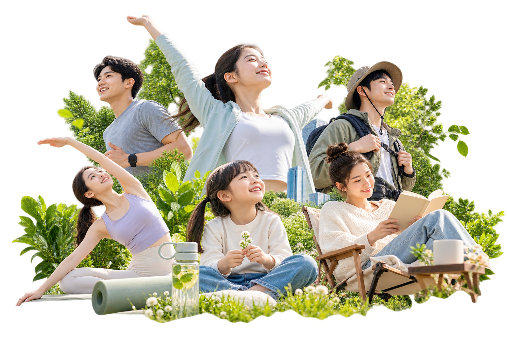
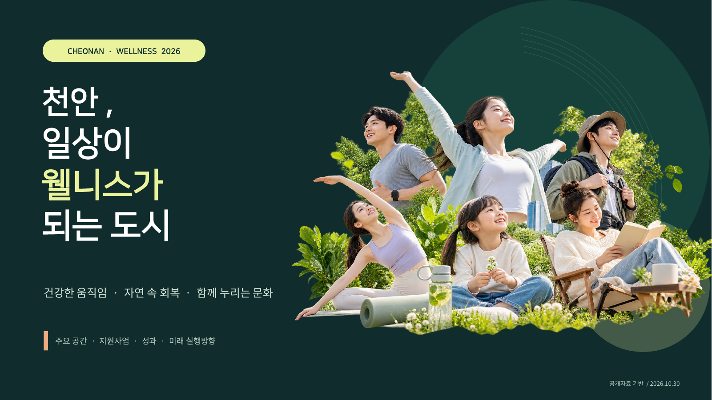
천안의 웰니스 자원을 4가지 시민 경험으로 재해석
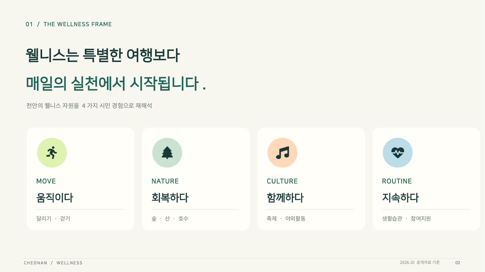
자연 · 도심 · 역사 · 문화가 가까운 생활권 안에 공존
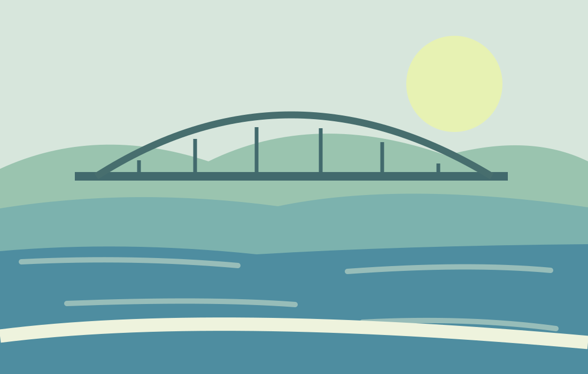
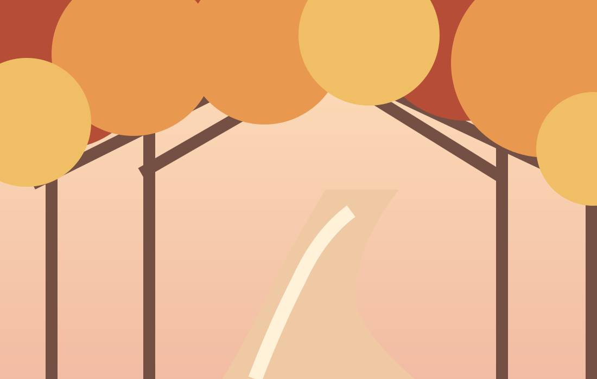
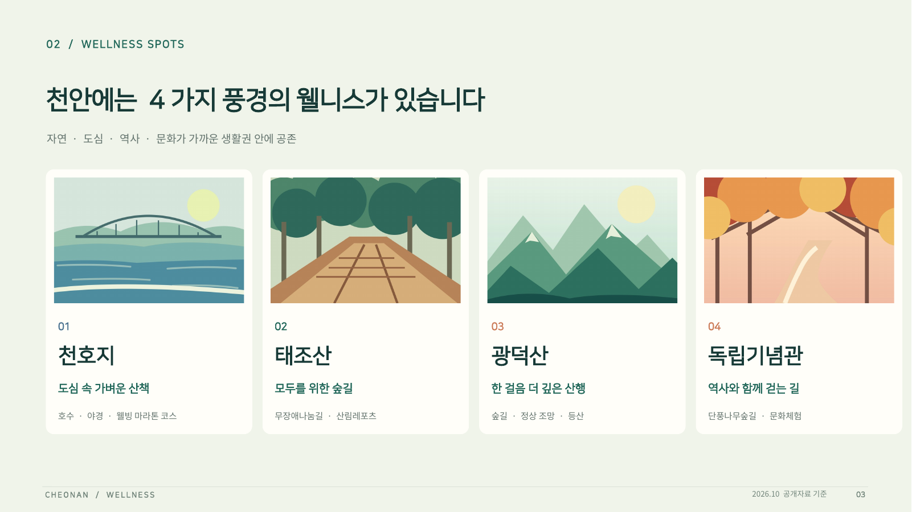
같은 걷기라도 접근성 · 계절성에 따라 서로 다른 경험을 제공합니다
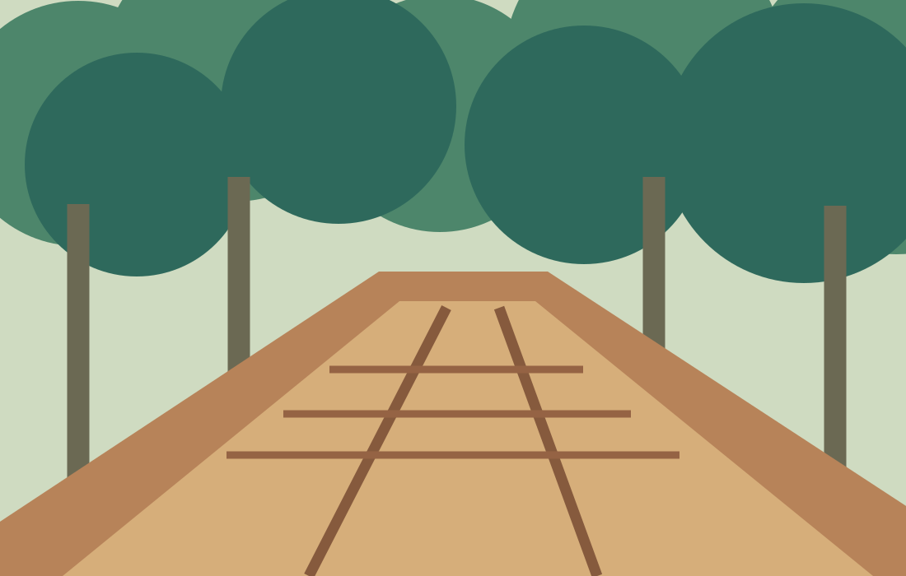
숲속 목재데크 / 일상 속 편안한 걷기
계절의 색을 따라 걷는 역사 · 힐링 코스
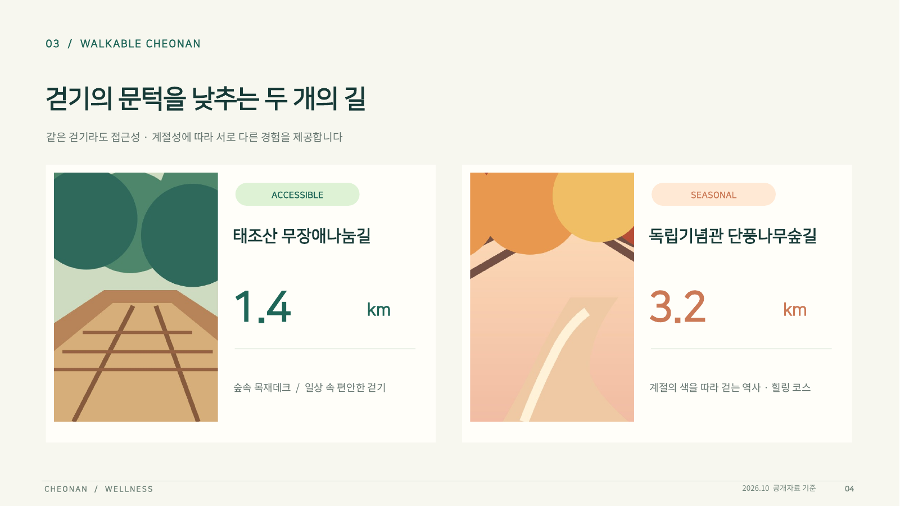
2026 제5회 천안이봉주마라톤 · 10월 11일 개최
천안종합운동장 일원 · 하프 / 10km / 5km
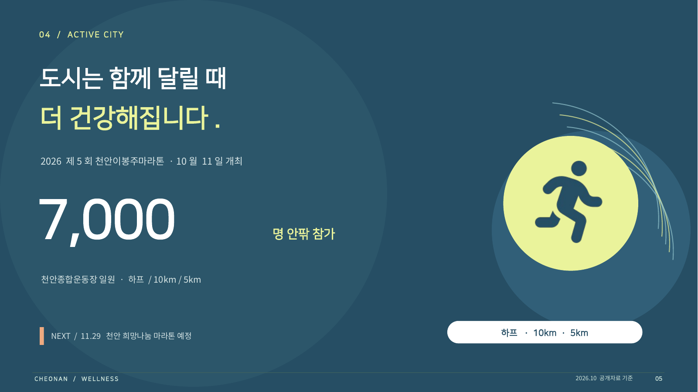
서북구보건소 ‘걷쥬 시즌2’와 걷기 챌린지 운영
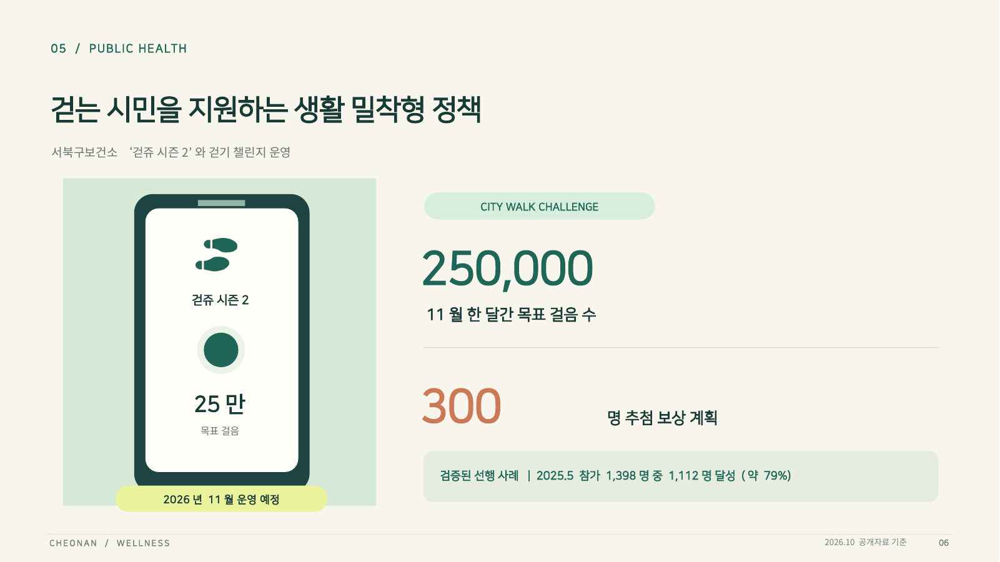
문화 참여는 몸을 움직이고도시에 활력을 더합니다.
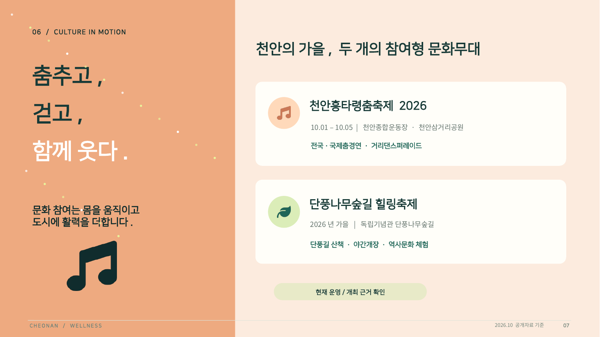
집계 연도와 사업 범위를 표기한 공개 실적만 활용
* 2026 수치는 10월 6일 발표한 잠정 관람객 집계
2026 천안이봉주마라톤 참가자
2025.5 걷기 챌린지 목표 달성률
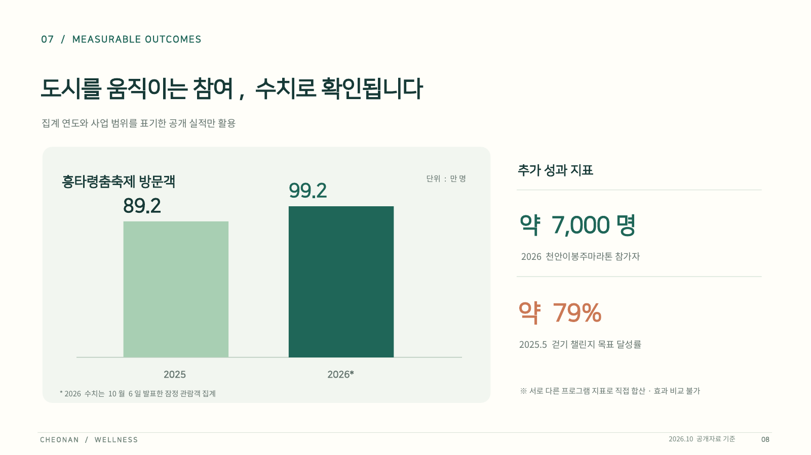
더 많이 참여하고, 더 오래 지속하도록
숲길 · 러닝 · 축제 · 보건사업을하나의 웰니스 맵으로 안내
초보자 · 가족 · 보행약자를 위한맞춤형 참여 프로그램 확장
재참여 · 접근성 · 만족도를공통 지표로 측정하고 개선
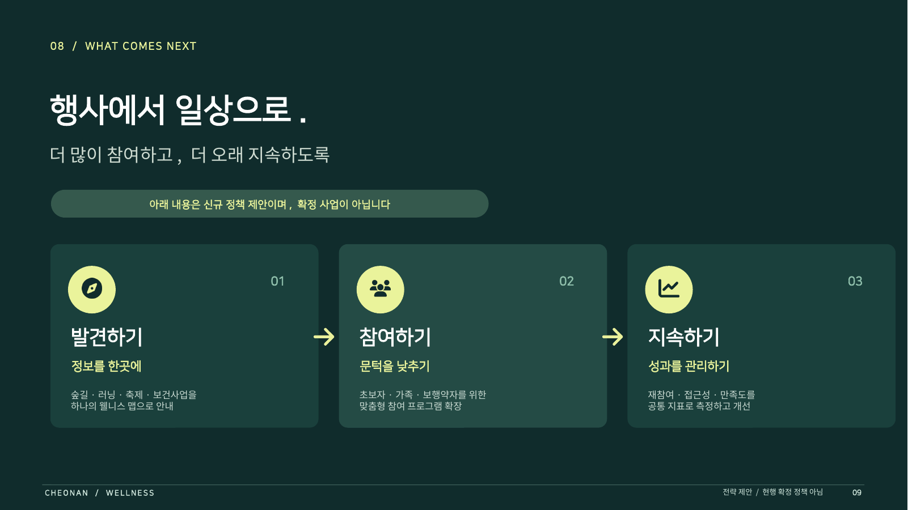
2027 실행 방향 제안 · 미확정
공간 · 행사 · 지원사업통합 현황 정리
시민 참여형 코스 ·계절별 프로그램 실증
만족도 · 재참여율 평가및 확대 여부 결정
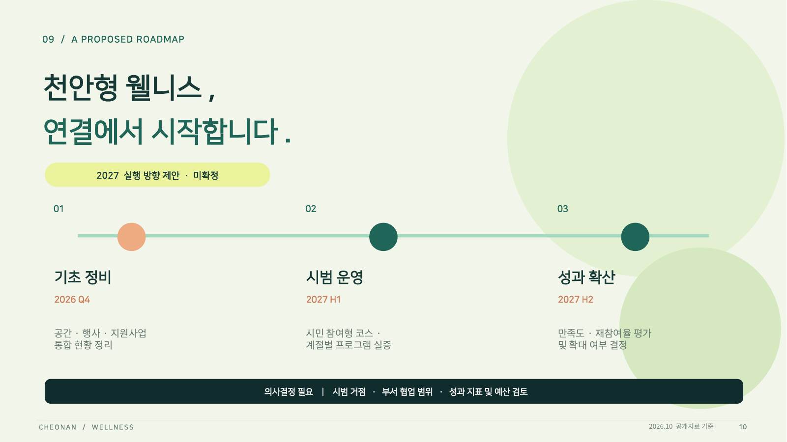